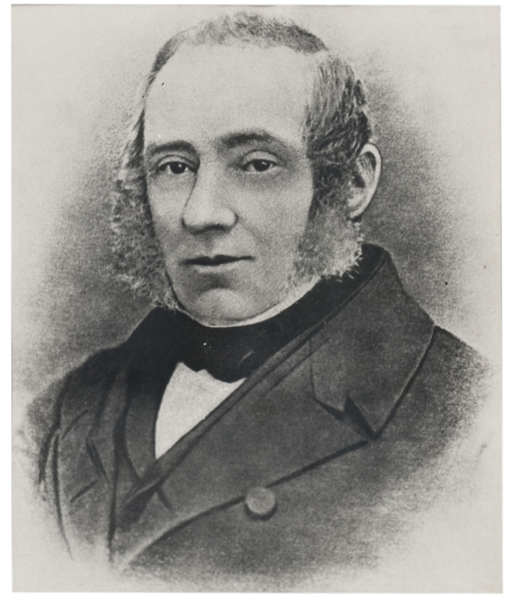
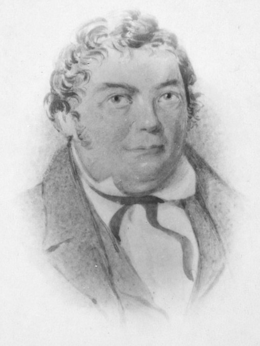

Upper Town
The area north of Wellington Street has some of the most impressive government buildings in Ottawa. Canada’s most important judicial buildings, such as the Supreme Court of Canada and the Justice Building, all reside within this area west of Parliament Hill bounded by the west end of Parliament Hill and the north side of Wellington St opposite Bay. Prior to the construction of these buildings, the community that existed at this location predated them by more than 100 years.
Origins
Originally known as Upper Bytown, the community was the first development of the future capital along with Lowertown east of the Rideau Canal. The area was purchased by Lord Dalhousie in June 1823 for military purposes and was available for residency on 18 October 1826.

Source: Library & Archives Canada
About 38 people applied for lots and most were mainly early prominent residents of Bytown such as Thomas MacKay, Thomas Burrows, Michael Burke, Dr. A. J. Christie and several Captains of the Royal Navy. Each person had 12 months to construct a building on their lot or else it was returned to the crown. Only Dr. Christie, MacKay, Burke and Captain Andrew Wilson achieved this goal in time. However, in time each lot was eventually occupied.


Source: CHRISTIE, ALEXANDER JAMES - Dictionary of Canadian Biography
Vibrant Community
As Wellington Street became a busy road in the new town, shops and hotels began popping up along its length. The community became vibrant with a mixture of commercial and residential properties as well as a mix of building types such as wood, brick and stone.
Many notable people and businesses called this area of town home. In 1875, William Goodhue Perley, a lumber entrepreneur and later a Member of Parliament, constructed an impressive home where the Library & Archives of Canada Building currently stands. After his death in 1890, he donated the house unconditionally to the City of Ottawa which opened the Perley Home for Incurables which is now Perley Health at Russell Road.

Source: Topley Studio Fonds / Library and Archives Canada / PA-027381
Five Fathers of Confederation lived in the community at one time or another, Sir Charles Tupper, Sir Alexander Campbell, James Cockburn, Sir George-Etienne Cartier and Jean-Charles Chapais. Sir Alexander Mackenzie, Canada's 2nd Prime Minister, resided at 22 Vittoria Street while as a Member of Parliament.

Source: Topley Studio / Library and Archives Canada / PA-028183
In 1900, the Capital Brewing Company opened at the northwest corner of Wellington and Bay Streets producing 100,000 barrels of ale a year.

Source: Streetscape Memory Bank: The lost Ottawa community of Uppertown - Apartment613
The Ottawa Curling Club moved to Vittoria Street in 1878 and in 1906, built a new rink at 92 Vittoria Street. The new rink was heralded as the “Finest in Canada” by the Ottawa Citizen. The first stone was skipped by the Governor General at the time, Albert Grey, the 4th Earl Grey. The curling club remained at the location until 1914 when it moved to 440 O'Connor Street where it still is.

Source: Library and Archives Canada
Some of the most impressive houses were along Cliff Street. This street provided the most stunning views from the cliffs along the Ottawa River. One such house, located at No. 41, was the residence of Robert James Devlin who owned a successful department store on Sparks Street. His sons would look for a thrill by spending the day scaling the cliff down to the river.

Source: Topley Studio Fonds / Library and Archives Canada / PA-027301

Source: Topley Studio / Library and Archives Canada / PA-027392
Expropriation & Demolition
As Canada continued to grow at the turn of the century, so did the Federal Government that wished to construct new buildings in Ottawa. They set their sights on the area to the west of Parliament Hill along Wellington Street overlooking the Ottawa River. The government filed a notice with the City of Ottawa on March 11, 1912 to expropriate the properties north of Wellington Street from Bank Street to the western edge of the Perley property.
The government had grandiose plans for this area, such as the one in the Holt Plan in 1915 showing multiple government buildings along Wellington and Bay Streets. However, with the First World War raging and most likely due to the fact the Centre Block of the Parliament Buildings burned to the ground in 1916, the plans for this area were put on hold for well over a decade and many of the houses remained until 1938.

Source: The Holt Plan, 1915
During this time, the government used some of the buildings they owned for public purposes. For instance, in 1934, the first offices of the Canadian Radio Broadcasting Commission (precursor of the CBC) set up shop at 41 Cliff Street.
Demolition of the buildings occurred over time as new buildings were constructed. By 1931, all the buildings between Kent and Bank Streets were gone to make way for the Confederation Building, except for the one which originally housed the British American Bank Note Company. When this building finally saw the wrecking-ball, the archway and pillars were saved by Prime Minister William Lyon Mackenzie King and placed on his Kingsmere Estate in Gatineau Park where they still stand today.


By 1938, the Justice Building was constructed and all the original buildings in the area were gone except for the houses along Cliff Street and a few buildings at the west end along Wellington Street, including the Perley house.
The last building to stand was the Devlin house at 41 Cliff Street which saw demolition later in 1938. Construction began in 1939 for the current Supreme Court Building and the first cases were heard in the new building beginning in January 1946.

Source: Library and Archives Canada
Area Today
Today the area includes some of the most important government buildings: the Confederation Building, the Justice Building, the Supreme Court Building and the Library & Archives Building. As a result, there is no sign of the once thriving and historic community. Someday, a new Federal Court building could be built on the site to complete what is sometimes referred to as the Judicial Triad.